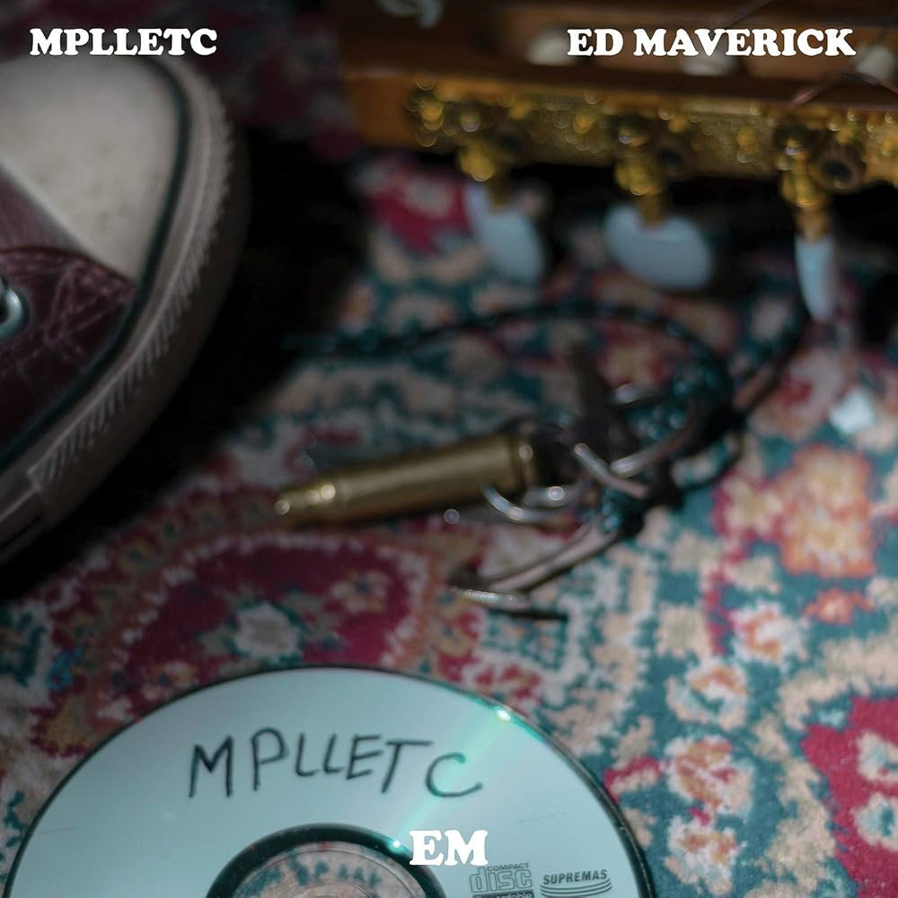
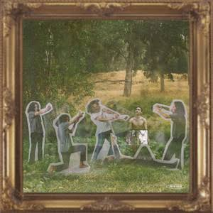
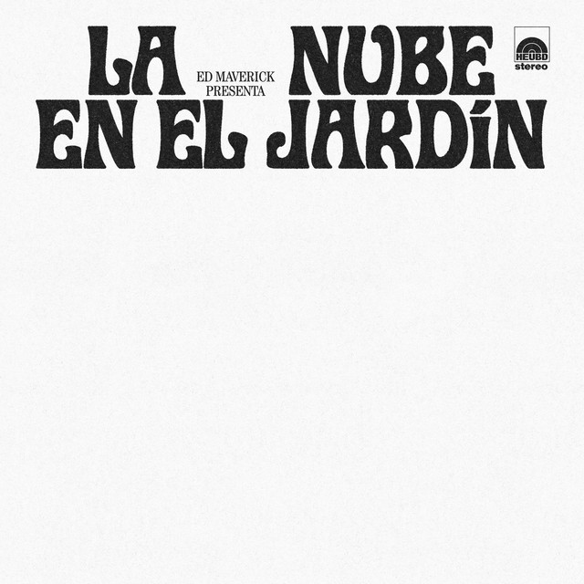

Eduardo Hernández Saucedo, conocido como Ed Maverick, es un cantautor, productor y músico multinstrumentista mexicano. A lo largo de su carrera, a lanzado un total de 5 álbumes y a la espera proxima de 2 nuevos discos; Un EP (mini-álbum, más corto que un álbum normal); Cuenta con un total de 55 canciones en solitario, 8 canciones colaborativas en las que ha participado y algunos tracklists en vivo.

"mix para llorar en tu cuarto" cuenta con 12 canciones, de genero músical "Folk Triste". Es considerado su primer lanzamiento de su carrera, lanzado en el año 2018 el cual salio al aire de forma independiente a sus 17 años, para luego re-lanzarlo con el sello discografico Universal en el año 2019. De este álbum salio su primer exito, el cual fue, "Fuentes de Ortiz (2018); Esta canción fue la que lo lanzo al estrellato y lo dio a conocer, ádemas de hacer un antes y un después en la musica folkclorica, ádemas de tener un gran impacto en como se veian a los nuevos artistas jovenes haciendo música alternativa.
"Transiciones" cuenta con un total de 13 canciones, de genero músical "Folk triste, más maduro que el anterior. fue su segundo álbum lanzado al aire el 26 de mayo de 2019. Este álbum es de los más allegados al artista, pues salio en una epoca en la que el mismo declara que era complicado el cambio repentino de ser nadie a ser alguien conocido; misma idea que retrata en varias de sus canciones como "Transiciones", A mis amigos, lo que pienso etc. Canciones que fueron muy bien recibidas por el público por sus letras muy significativas.
"Esto no tiene nada que ver con eduardo" lanzado en 2020 durante la cuarentena, con un total de 5canciones. Este EP fue uno experimental, donde el artista experimento nuevos sonidos y conceptos los cuales dieron un resultado mas lo-fi y extravagante. No es un material tan conocido pero es demasiado infravalorado.

"Eduardo" lanzado en el año 2021 con un total de 12 canciones. Este es de los albumes mas trabajados del artista. Ademas este álbum salio a la luz en uno de los momentos más vulnerables del artista, debido a que enfrentaba por una situacion de acoso y ciberbullying injustificado. Hablaba de su fama y de desaparecer de las redes sociales. El álbum tiene un genero musical de folk, indie y toques de banda con letras demasiado profundas.

"LA NUBE EN EL JARDÍN" fue lanzado en el año 2024, siendo este el álbum de regreso del artista despues de haber estado 3 años alejado de las redes y del ojo público. Este álbum a diferencia de los anteriores solo tiene un solo track, el cual tiene una duracion de 53 minutos. Con 8 tracks juntos. Este album salio de esta manera debido a que tiene como objetivo ser una experiencia totalmente auditiva, teniendo una sensacion de ser algo casero y acustico.